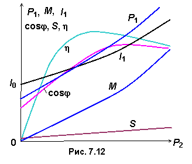

7.3.4. Рабочие характеристики двигателя

Эксплуатационные свойства асинхронного двигателя можно оценить по рабочим характеристикам, которые изображаются кривыми, выражающими графические зависимости от полезной мощности Р2 величин: тока I1 в обмотке статора, КПД , скольжения S, коэффициента мощности cosφ, полезного момента M на валу АД при U1 = const и f1 = const (рис. 7.12). Их определяют экспериментально или путём расчёта, используя схему замещения АД.
При холостом ходе P2 = 0, а токи обмоток статора I0, создающие вращающееся магнитное поле, довольно велики и составляют 30...50% номинальных токов I1н. Вследствие потерь в магнитопроводе и вентиляционных потерь у двигателя при холостом ходе cosφ = 0,1...0,2, а частота вращения ротора n2х = (0,995...0,998)n1.
По мере роста нагрузки на валу ток статора увеличивается, как и активные мощности P2 и P1. В свою очередь, увеличивается коэффициент мощности
 .
.


При этом скольжение S увеличивается, а частота вращения вала n2 уменьшается, поскольку это единственная причина увеличения тока и вращающего электромагнитного момента. При нагрузках, близких к номинальной, рост КПД замедляется; более того, он может несколько падать вследствие увеличения потерь в обмотках двигателя. При номинальной нагрузке КПД двигателей мощностью 3...100 кВт η = 0,8...0,93, а cosφн = 0,7...0,9.